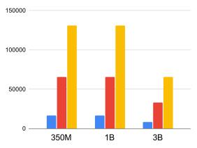
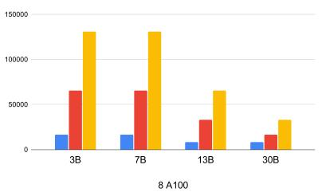
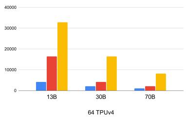

Blockwise Parallel Transformer for Large Context Models
NeurIPS 2023
llm
transformer
memory-efficiency
long-context
A blockwise computation approach for both self-attention and feedforward networks that reduces memory costs, enabling 32x longer context lengths.
Background & Motivation
The Success of Transformers
- Transformers are the backbone of state-of-the-art NLP and AI models.
- They excel at capturing long-range dependencies via self-attention and feedforward mechanisms.
- Scalability in context length and model size is driven by highly parallel computations.
The Long Context Challenge
- Many AI problems require handling extremely long sequences (high-res images, books, code).
- Standard Transformers struggle to scale to long inputs due to massive memory requirements.
- Memory demands restrict tasks involving multiple long sequences or long-term dependencies.
Self-Attention Memory Bottleneck
- Standard self-attention materializes the \(Q K^T\) and softmax matrices to High Bandwidth Memory (HBM).
- This results in a quadratic \(O(s^2)\) space complexity with respect to sequence length \(s\).
- Various approximations (sparse, low-rank) have been proposed but often sacrifice exactness.
Prior Work: Memory-Efficient Attention
- Recent methods compute exact self-attention with linear memory complexity (e.g., FlashAttention).
- They use online softmax and blockwise computation to avoid materializing the full attention matrix.
- This successfully reduces the self-attention memory footprint from \(O(s^2)\) to \(O(s)\).
The Overlooked Bottleneck: Feedforward Networks
- While attention memory is optimized, the position-wise Feedforward Network (FFN) is overlooked.
- The FFN contains a massive number of parameters and produces high-dimensional intermediate vectors.
- Once attention is memory-efficient, the FFN becomes the primary memory bottleneck for long contexts.
Memory Cost of Vanilla FFN
- FFN applies two linear transformations with a ReLU activation across the full sequence.
- With gradient checkpointing, the maximum activation size of the FFN is \(8bsh\) bytes.
- For large context sizes, this overwhelming memory demand severely hinders model scaling.
The Opportunity for Blockwise Computation
- If self-attention is computed blockwise, we do not need to wait for the full sequence to finish.
- We can merge the computation of the FFN directly into the blockwise attention process.
- This eliminates the need to materialize full-sequence intermediate activations for the FFN.
Design
Blockwise Parallel Transformer (BPT) Overview
- BPT leverages blockwise computation for both self-attention and the feedforward network.
- It fuses the FFN computation into the attention block loop to minimize memory costs.
- Enables processing significantly longer input sequences while maintaining a low memory budget.
Blockwise Self-Attention Recap
- Input sequences \(Q, K, V\) are split into blocks.
- For each query block, attention is computed by iterating over all key-value blocks.
- Global attention is obtained by tracking normalization statistics and scaling blockwise outputs.
Fusing Attention and FFN
- BPT applies the FFN immediately after the attention output for a specific query block is ready.
- The model computes the FFN on intermediate blocks rather than the full sequence.
- Output for each block: FFN(Attention(\(Q_i, K, V\)) + \(Q_i\)) + Attention(\(Q_i, K, V\)) + \(Q_i\).
Nested Loop Architecture
- Outer Loop: Iterates over each query block \(Q_i\).
- Inner Loop: Iterates over each key-value block to compute blockwise attention for \(Q_i\).
- Fusion: The FFN and residual connection are applied inside the outer loop before moving to the next \(Q_i\).
BPT Architecture Diagram

- The architecture projects an incoming input block into a query.
- It iterates over the sequence to project keys and values, computing self-attention (yellow box).
- The output is immediately passed to the FFN (cyan box) and residual connection, repeating per block.
Memory Cost Analysis: Vanilla vs. FlashAttention
- Vanilla Transformer: Maximum activation size is \(O(s^2)\) due to full attention matrix materialization.
- FlashAttention: Attention activation is reduced to \(2bsh\), but FFN activation remains \(8bsh\).
- FlashAttention layer total memory cost is dominated by the FFN (\(8bsh\)).
Memory Cost Analysis: BPT
- BPT Attention: Maximum activation size is \(2bsh\), matching FlashAttention.
- BPT FFN: By iterating FFN over blocks, the maximum FFN activation size is reduced to \(2bsh\).
- Result: BPT offers a 4x memory saving (\(8bsh / 2bsh\)) for activations compared to FlashAttention.
Why Blockwise Parallelization Works
- For large models or extremely long contexts, a single block reaches maximum arithmetic density.
- Executing the full-length sequence in parallel becomes impractical and unnecessary.
- Blockwise parallelization treats long sequences as short ones, effectively enabling massive context sizes.
Hardware Advantages
- SRAM (on-chip memory) is an order of magnitude faster than HBM (global memory) on GPUs/TPUs.
- BPT taps into the increased speed of SRAM by keeping block computations local.
- Fusing attention and FFN reduces data movement between SRAM and HBM, increasing overall throughput.
Implementation Details
- Implemented in Jax, optimized for simplicity and large-scale distributed training.
- Uses
scanoperations to iterate over sequence chunks without materializing full matrices. - Employs the max-score trick for numerically stable blockwise softmax computation.
Evaluation
Experimental Setup
- Models: GPT architecture ranging from 1B to 70B parameters.
- Hardware: NVIDIA 80GB A100 GPUs (1x and 8x) and 64 TPUv4s.
- Baselines: Vanilla Transformer and Memory-Efficient Attention (FlashAttention).
- Datasets: OpenWebText (Language Modeling) and ExoRL (Reinforcement Learning).
Maximum Context Length: 1 A100

- Evaluated on a single A100 GPU for 350M, 1B, and 3B parameter models.
- BPT achieves a maximum sequence length of 131K for 1B parameters.
- This is 2x longer than Memory-Efficient Attention and 8x longer than Vanilla Attention.
Maximum Context Length: 8 A100s

- Evaluated using model parallelism across 8 A100 GPUs for 3B to 30B models.
- BPT enables training sequences of 65K for a 30B parameter model.
- Consistently outperforms baselines, doubling the context length of Memory-Efficient Attention.
Maximum Context Length: 64 TPUv4s

- Evaluated on 64 TPUv4s for massive models (13B, 30B, 70B).
- BPT allows an 8K context length for a 70B model.
- Achieves up to 4x longer sequences than Memory-Efficient Attention at this scale.
Memory Usage Comparison
- At a 16K context length (3B model, 1 A100), Vanilla OOMs, FlashAttention uses 47GB, BPT uses 45GB.
- At a 65K context length (13B model, 8 A100s), FlashAttention uses 75GB, BPT uses 68GB.
- BPT consistently consumes the least memory, pushing the boundary before Out-Of-Memory (OOM) occurs.
Throughput and Training Speed
- Measured in tokens processed per device per second on a 1B model.
- BPT achieves competitive throughput with FlashAttention at shorter contexts (1.17x speedup over Vanilla at 8K).
- At 32K and 64K contexts, BPT maintains high throughput while all other methods run out of memory.
Application: Reinforcement Learning
- Evaluated on the ExoRL benchmark (unsupervised RL data relabeled with task rewards).
- Agentic Transformer (AT) conditions on multiple trajectories to predict actions.
- Original AT was limited to 4 trajectories due to memory constraints.
RL Performance Gains
- BPT enables AT to condition on 32 trajectories (sequence length of 32,000 tokens).
- Training 32 trajectories with a 350M model is infeasible for Vanilla and FlashAttention (both OOM).
- AT + BPT consistently outperforms the original AT across all six tasks (average return 155.36 vs 120.65).
Limitations and Future Work
- Current implementation prioritizes simplicity using high-level Jax operations.
- Low-level optimizations (e.g., porting to CUDA or OpenAI Triton) are needed for absolute peak performance.
- Future work will focus on maximizing speedup and further minimizing hardware-specific memory costs.